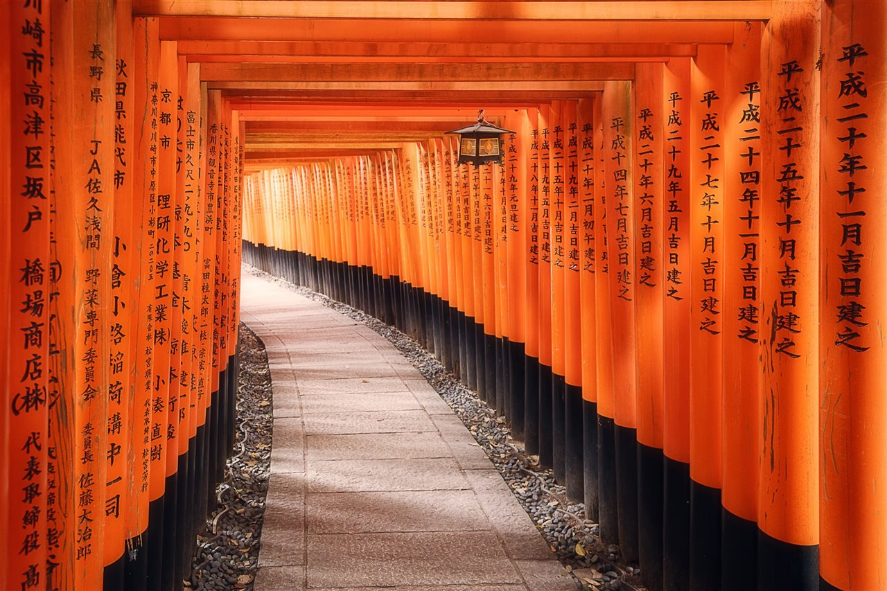
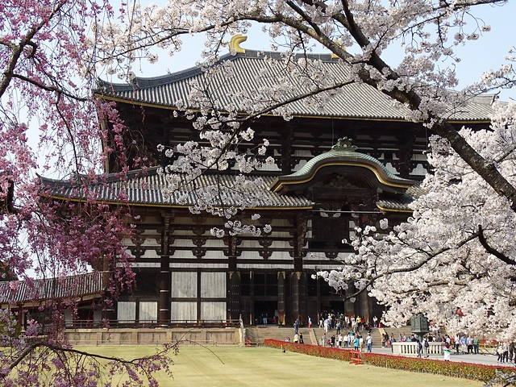
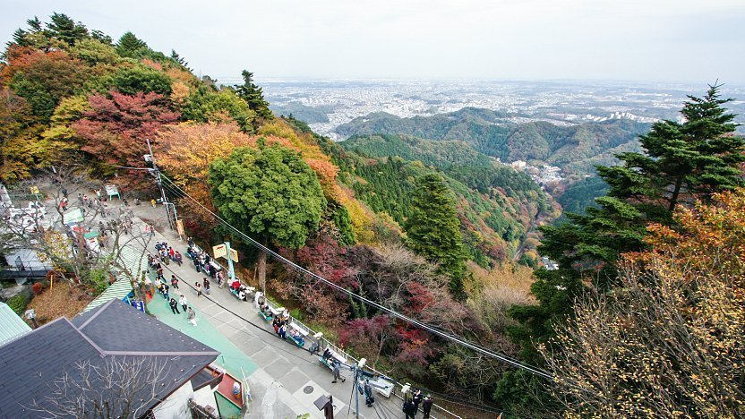

La llegada de los cerezos en flor, representa la llegada de la
primavera. Esta temporada ocurre entre marzo a mayo dependiendo de la
ubicación. Comineza en el sur y se va desplazando hacia el norte. Con
cielos soleados, es el momento ideal para salir y explorar las ciudades
y el campo. La temporada de lluvias comienza a finales de marzo,
principios de junio.
Verano
El verano en Japón es muy caloroso, por lo que se debe tener hidratación
en todo momento. Las playas estan llenas de gente durante este tiempo,
hay fuegos artificiales y muchos festivales a lo largo del pais. Hacia
septiembre, ocurren los tifones.
Otoño
El tiempo va cambiando entre septiembre y diciembre. Es un momento para
disfrutar al aire libre y es buen momento para disfrutar de la
gastronomía del país.
Invierno
Este ocurre desde diciembre hasta marzo, comienza la temporada de
esquiar. Durante enero, el clima es fresco y despejado. Pero al llegar a
febrero, se torna gris.
Tokio
Kioto
Sapporo
Sendai
Kanazawa
Fukuoka
Naha

Santuario Fushimi Inari (Kioto)
El Fushimi Inari-Taisha es el principal santuario sintoísta dedicado al
espíritu de Inari, y situado en Fushimi-ku, uno de los distritos de
Kioto. El santuario se encuentra situado en la base de una montaña
también conocida como "Inari", que incluye varios senderos para llegar a
otros santuarios más pequeños.
Galería
Ubicación
Kinkakuji (Kioto)
Este es uno de los templos más importantes en la historia y turismo de
Japón. Es tambien conocido como el pabellon dorado. Esta se incendio
varias veces a lo largo de las guerras. El templo que esta presente en
la actualidad, fue reconstruido en 1955 y declarado como patrimonio de
la humanidad por la UNESCO. Forma parte de la el conjunto de monumentos
historicos de Kioto.
Galería
Ubicación

Templo Todaiji (Nara)
Es un templo budista de gran importancia, que alberga a un estatua
gigante de Buda. Tambien es un cuartel japones para la escuela Kegon del
budismo. Ha sido reconstruida dos veces por causa de incendios
provocados por la guerra. Tiene un record mundial por ser la
construcción de madera más grande del mundo. Fue declarada como
patrimonio de la humanidad por la UNESCO.
Galería
Ubicación

Monte Takao (Tokio)
Tiene una altura de 599 msnm y es un lugar popular en la practica del
senderismo entre los habitantes de Tokio. Es frecuentado usualmente por
más de dos millones de visitantes por año.
Galería
Ubicación
Parque Shinjuku Gyoen (Tokio)
Es un jardin botanico de 58.3 hectáreas. Esta administrado por el
Ministerio nacional de Medio Ambiente. Es uno de los jardines más
importantes que hay en Japón, ha pasado por ser un jardín imperial. Pero
despues paso a ser un jardin nacional abierto al público. Presentan
anualmente del 1 al 15 de noviembre, la exposición Nacional de
Crisantemos. Los crisantemos son los simbolos imperiales japoneses.
Japón es una pequeña nación insular que se encuentra en el oceano
pacífico en el continente asiatico. Es un pais con grandes ciudades,
que tiene muchos sitios historicos muy importantes como palacios
imperiales, parques nacionales montañosos, algunos santuarios y
templos. Su capital que es Tokio, es famosa por sus edificaciones
como son rascacielos, comercio y la cultura.
Japón ha sido un país habitado desde el siglo I, que ha jugado un
papel importante en la historia, y ha estado bajo diferentes
imperios que definieron el rumbo de la nación.
Travel Guru
Clima y geografia.
El 70% del país, esta compuesto por bosques espesos y zonas
montañosas que se encuentran unidos por los Alpes Japoneses. En
algunos lugares, hay volcanes y las erupciones ya son comunes para
los habitantes. Cuenta con gran cantidad de fauna debido a esta
diversidad en las regiones. Muchas de las islas estan deshabitadas y
la naturaleza se esta adueñando de ellas.
Durante las estaciones.
(De click para ver más información de una estación)
Primavera
Verano
Otoño
Invierno
Travel Guru
¿Cuando es la mejor época para viajar?
Todo depende del lugar a donde quieras viajar y cual es el mejor
clima para ti.
La mejor época para viajar a Japón es entre abril-mayo y
octubre-noviembre. Entre abril y mayo, se encuentra la epoca del
verano que es muy aconsejable debido a el calor que hay y ademas de
las actividades culturales que se pueden realizar durante este
tiempo. Entre octubre y noviembre, esta entrando el invierno, tiempo
que se puede utilizar para las actividades recreativas como esquiar.
Trata de no viajar a principios de septiembre, debido a los tifones
que se presentan. Si viajas en epoca de invierno, no olvides llevar
buen abrigo. Por el contrario, en épocas de verano, recuerda llevar
buena hidratación. Y en las épocas de mitad de año, hay mayor
porcentaje de precipitaciones, por lo que se recomienda ir
preparado.